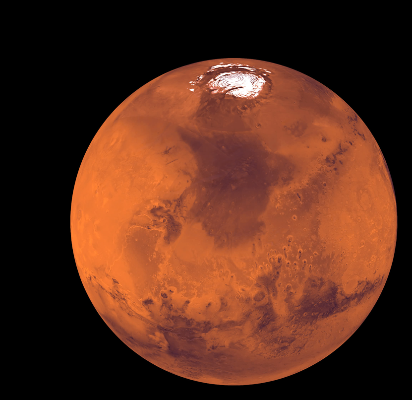

Mars
Fourth planet from the Sun, named after the Roman god of war.
Its mean distance from the Sun is 141 million mi (227 million km). Its day is 24.6 Earth hours and its year about 687 Earth days. It has two small moons, Phobos and Deimos. Mars's equatorial diameter is 4,220 mi (6,792 km), about half that of Earth, and it is less dense than Earth. Its mass is about one-tenth of Earth's and its surface gravity about one-third as strong. No magnetic field has been detected on Mars, suggesting, as does its low density, the absence of a substantial metallic core. Like Earth, it has seasons and an atmosphere, but its average daytime surface temperature is only -10 °F (-20 °C). Mars's thin atmosphere is mainly carbon dioxide, with some nitrogen and argon and traces of water vapour. Spacecraft images show a cratered surface, with volcanoes, lava plains, flood channels, and canyons, many large by Earth standards; Olympus Mons, for example, is the largest known volcano in the solar system. Wind is an important element on Mars, sculpting features such as dunes and occasionally causing global dust storms. In the distant past Mars appears to have had a denser, warmer atmosphere and much more water than at present. Images from the Mars Global Surveyor spacecraft suggest that some liquid water may have flowed near the planet's surface in relatively recent times. No life has been detected on the planet.